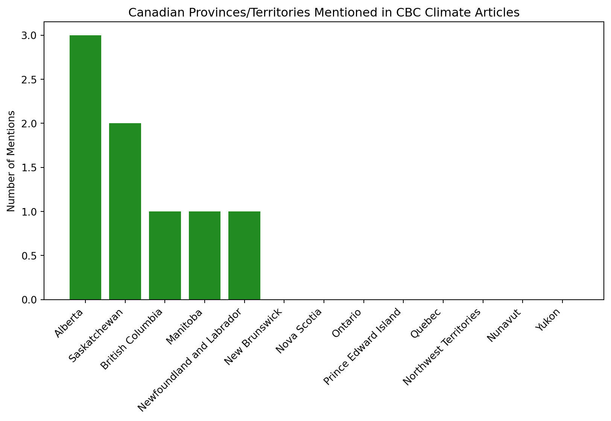

Scraping 2026 CBC Climate Coverage: How are the most recent climate articles discussing Canadian provinces and climate events?
Author
Siona Chisholm
Published
February 25, 2026
This report analyzes recent CBC News articles to identify geographic focus areas and the narrative framing of climate change impacts across Canada.
Code
import requestsfrom bs4 import BeautifulSoupimport pandas as pdimport timefrom urllib.parse import urlparseurls = ["https://www.cbc.ca/news/canada/edmonton/northern-alberta-wood-bison-9.7104110","https://www.cbc.ca/news/canada/british-columbia/herring-spawn-2026-vancouver-island-9.7101843","https://www.cbc.ca/news/science/winter-snow-climate-water-9.7078119","https://www.cbc.ca/news/climate/what-on-earth-hannah-ritchie-9.7097028"]headers = {"User-Agent": "Mozilla/5.0 (Windows NT 10.0; Win64; x64) ""AppleWebKit/537.36 (KHTML, like Gecko) ""Chrome/144.0.0.0 Safari/537.36"}articles = []for url in urls:try: r = requests.get(url, headers=headers, timeout=10) r.raise_for_status() soup = BeautifulSoup(r.content, "html.parser") title_tag = soup.find("h1") title = title_tag.get_text(" ", strip=True) if title_tag else"" path_parts = urlparse(url).path.split("/") section_guess = path_parts[2] iflen(path_parts) >2else"" paragraphs = soup.select("div[data-cy='storyWrapper'] p")ifnot paragraphs: paragraphs = soup.select("div.story p") text_raw =" ".join([p.get_text(" ", strip=True) for p in paragraphs]) html_raw =str(soup) articles.append({"url": url,"title": title,"section": section_guess,"text_raw": text_raw,"html_raw": html_raw })print(f"Fetched: {title}") time.sleep(1) except requests.exceptions.RequestException as e:print(f"Error fetching {url}: {e}")df = pd.DataFrame(articles)df.head()
Fetched: Relocated bison herd aims to bring food security to Métis in northern Alberta
Fetched: First signs of herring spawn spark excitement on Vancouver Island
Fetched: Warming temperatures are shrinking snowpack in key Canadian watersheds, study suggests
Fetched: Does clean energy generate too much waste? Hannah Ritchie checks the data on climate action
url
title
section
text_raw
html_raw
0
https://www.cbc.ca/news/canada/edmonton/northe...
Relocated bison herd aims to bring food securi...
canada
A cacophony of hooves against metal and snow p...
<!DOCTYPE html>\n\n<html lang="en">\n<head>\n<...
1
https://www.cbc.ca/news/canada/british-columbi...
First signs of herring spawn spark excitement ...
canada
Ryan Cutler was looking out his window from hi...
<!DOCTYPE html>\n\n<html lang="en">\n<head>\n<...
2
https://www.cbc.ca/news/science/winter-snow-cl...
Warming temperatures are shrinking snowpack in...
science
A record-breaking snow drought in the western ...
<!DOCTYPE html>\n\n<html lang="en">\n<head>\n<...
3
https://www.cbc.ca/news/climate/what-on-earth-...
Does clean energy generate too much waste? Han...
climate
Welcome to our weekly newsletter where we high...
<!DOCTYPE html>\n\n<html lang="en">\n<head>\n<...
Which Canadian provinces/territories and climate terms (or issues) are most frequently mentioned in the past 4 climate articles by CBC news?
Based on the bar charts below, we can see that Alberta and Saskatchewan are most frequently mentioned in the recent CBC climate articles, followed by British Columbia, Manitoba and Newfoundland and Labrador. The most frequently mentioned “issue” is water, however as water is such a common word, it could be intertwined into more than one specific issue (e.g. drought, flooding, ocean, marine, etc.). The next most frequently mentioned issues are carbon and emissions, forest, snowpack, climate change and drought.
Code
import pandas as pdimport matplotlib.pyplot as pltimport reprovinces = ["Alberta", "British Columbia", "Manitoba", "New Brunswick", "Newfoundland and Labrador","Nova Scotia", "Ontario", "Prince Edward Island", "Quebec", "Saskatchewan","Northwest Territories", "Nunavut", "Yukon"]climate_keywords = ["climate change", "warming", "temperature", "snowpack", "drought","flood", "emissions", "ecosystem", "species", "wildlife", "ocean","marine", "water", "glacier", "forest", "pollution", "carbon"]location_counts = {prov: 0for prov in provinces}issue_counts = {kw: 0for kw in climate_keywords}for text in df['text_raw']: text_lower = text.lower()for prov in provinces: location_counts[prov] +=len(re.findall(prov.lower(), text_lower))for kw in climate_keywords: issue_counts[kw] +=len(re.findall(kw.lower(), text_lower))loc_df = pd.DataFrame.from_dict(location_counts, orient='index', columns=['count']).sort_values('count', ascending=False)issue_df = pd.DataFrame.from_dict(issue_counts, orient='index', columns=['count']).sort_values('count', ascending=False)plt.figure(figsize=(10,5))plt.bar(loc_df.index, loc_df['count'], color='forestgreen')plt.xticks(rotation=45, ha='right')plt.title("Canadian Provinces/Territories Mentioned in CBC Climate Articles")plt.ylabel("Number of Mentions")plt.show()top_issues = issue_df.head(10)plt.figure(figsize=(10,5))plt.bar(top_issues.index, top_issues['count'], color='steelblue')plt.xticks(rotation=45, ha='right')plt.title("Top Climate Terms Mentioned in CBC Articles")plt.ylabel("Number of Mentions")plt.show()

Are recent climate articles more orientated upon the crisis or solution?
Based on the charts, we can see that the most recent articles include both solutions and crisis language. This suggests a balanced framing of climate issues in the news, however to see the extent of this balance we must look at the article level analysis.
The article level analysis shows the imbalance of crisis vs. solution framing in the most recent CBC climate articles.
The first article on bison shows no crisis or solution framing based on my keyword lists, however the second article on herring spawn is crisis focused with 2 mentions of “crisis” and no solution language. The third article on warming temperatures and snowpack is more balanced with 4 mentions of crisis language and 4 mentions of solution language. The fourth article on clean energy is heavily solution focused with 1 mention of crisis language and 5 mentions of solution language.
This analysis was important as it revealed that while the overall framing of the articles may appear balanced, at the article level there is a significant imbalance in the framing of climate issues. This suggests that while some articles may focus on solutions, others may be more crisis focused, which could influence public perception and engagement with climate issues.
Additionally, the visualizations may show the limitations to defining crisis and solution framing based on keyword counts alone, as the context in which these keywords are used can vary greatly and may not capture the exact article context. For example, an article may mention “crisis” in the context of a past event rather than an ongoing issue, or “solution” in the context of a proposed idea rather than an implemented action. Therefore, while this analysis provides insights into the framing of climate issues in CBC articles, it should be interpreted with caution and supplemented with qualitative analysis for a more comprehensive understanding.
However, for this project alone, I believe that the articles were still captured accurately in terms of their framing based on the keyword analysis and topics, and the visualizations effectively illustrate the differences in framing across the articles.
Code
framing_df.plot(kind='bar', figsize=(12, 6), color=['#4a5568', '#8fbc8f'])plt.title("Crisis vs. Solution Framing by Article")plt.ylabel("Keyword Mentions")plt.xticks(rotation=45, ha='right')plt.legend(title="Framing Type")plt.tight_layout()plt.show()